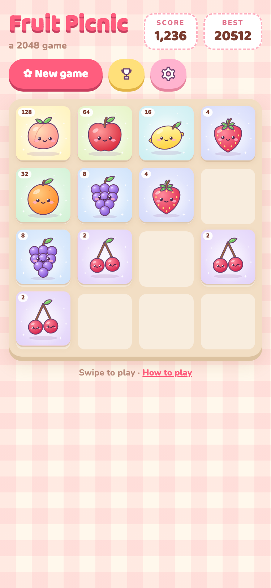
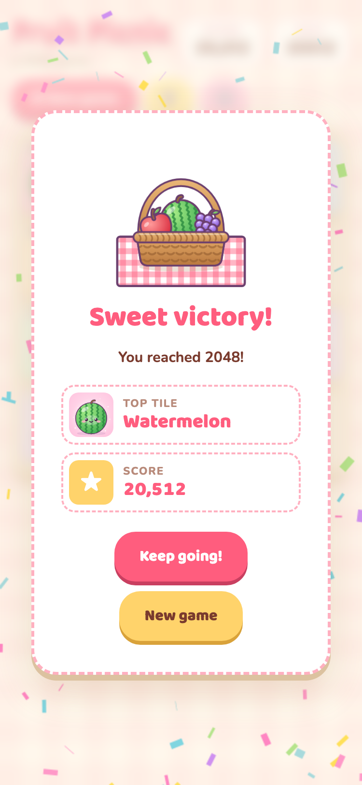
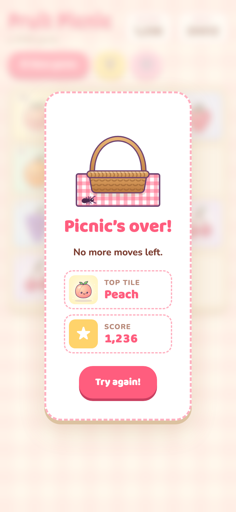
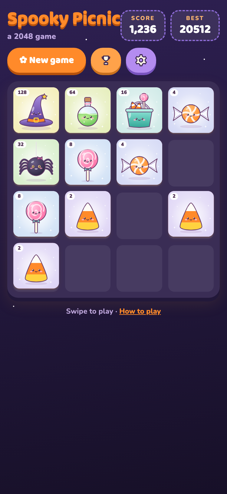
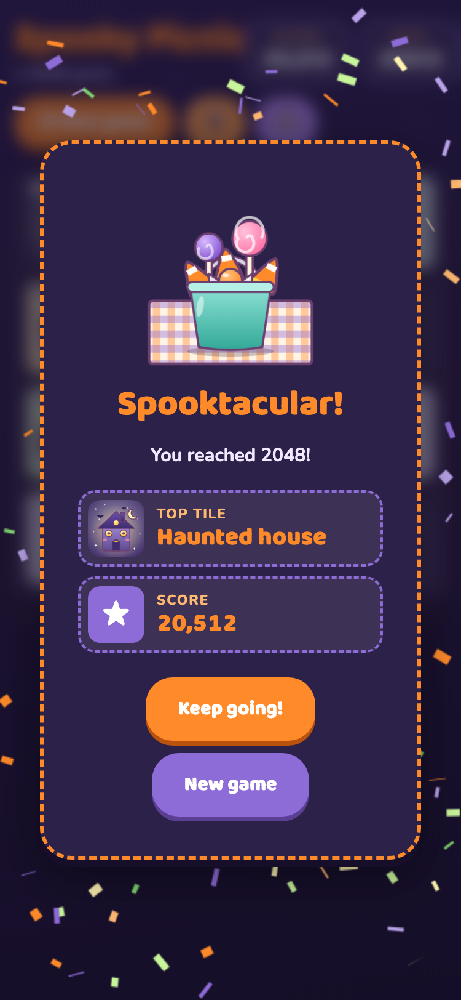
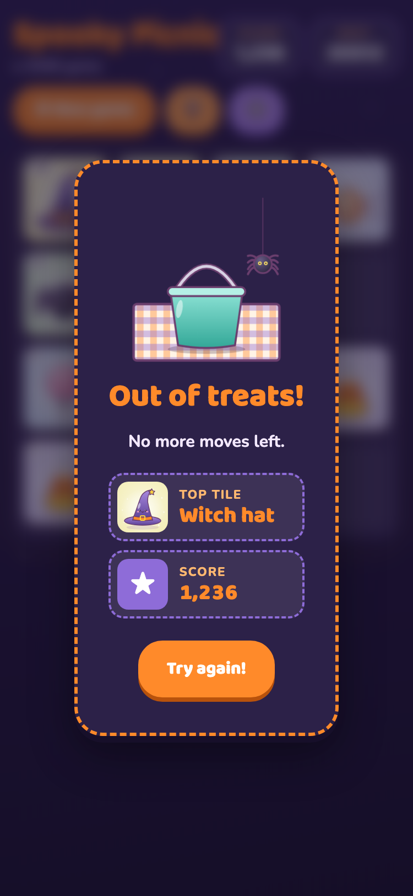
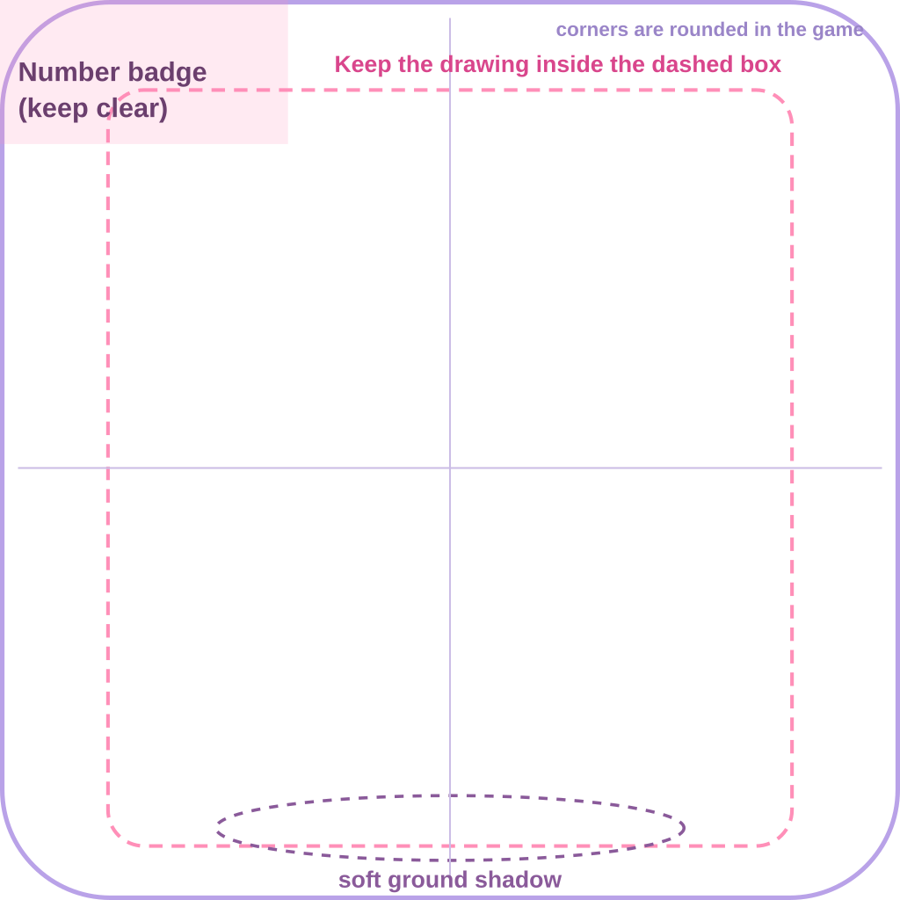
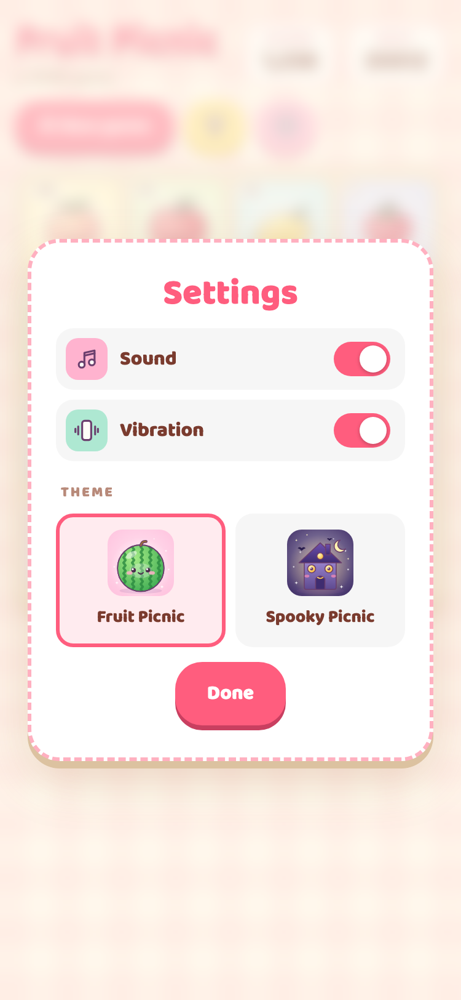
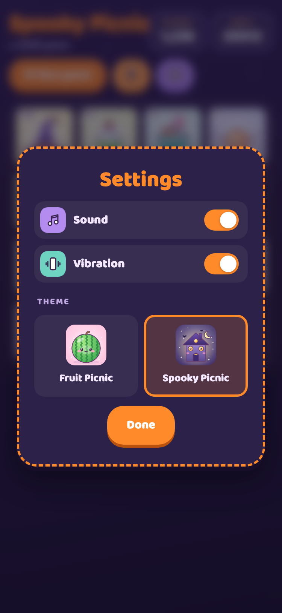

Fruit Picnic is a cozy, cute merge-puzzle game (like 2048). Two matching tiles slide together and become the next one, so the art tells a little story that grows from tiny to grand. Each theme is a complete makeover of the game, and this kit has everything needed to create a new one.
Plan 14 tiles that grow from small and simple to big and special, so players feel a little reward each time a new one appears:
tile-0002 … tile-16384The original theme: a cozy picnic blanket, a fruit ladder from cherries to watermelon, and a picnic basket on the win and lose cards.

Game screen
Win screen
Lose screenThe Halloween theme: a moonlit night sky, candy and witchy tiles up to a haunted house, a candy bucket on the cards, and its own button colours.

Game screen
Win screen
Lose screenThese are the only must-haves, so the art works in the game:

A full-size version of this guide is included as tile-template.png (for Procreate) and tile-template.svg (for Illustrator or Figma). The dashed area is just a helpful suggestion for where to keep key details.
A place to plan the 14 tiles: sketch each one in its slot and note its name and background colour.
Everything on the main screen can be restyled for the theme. The numbers match the parts to design:
1Background: colour, pattern or scene behind everything (e.g. gingham picnic blanket, starry night).
2Title: theme name, its colour and style; a small subtitle underneath.
3Score boxes: Score and Best.
4New game button: the main accent colour.
5Two round buttons: leaderboard and settings (a gear). Each can have its own colour, plus an icon. Sound, vibration and the theme switch now live inside Settings (page 7), so there’s no separate theme-switch symbol to draw.
6Board: the tray the tiles sit on and the empty spaces.
The gear button opens a small card with on/off switches for sound and vibration, and a picker for the themes. Vibration only appears in the iPhone app.

Fruit Picnic
Spooky Picnic7Card style: the same card look as the win and lose screens, with your theme’s border and Done button.
8Sound and vibration icons: two little icons on coloured squares. The game adds a slash across an icon when it’s switched off, so draw them “on”.
9Switch colour: the colour of a switch when it’s on (both themes use their accent colour).
10Theme picker: each theme is shown by its 2048 tile and name, and the chosen one gets a coloured outline. Your finale tile becomes this theme’s picture here, so nothing extra to draw.
The win screen appears when the player reaches 2048, and the lose screen when they run out of moves. Both show the player’s top tile and score.
11Card style: colour, border and buttons.
12Win art: the celebration picture (e.g. a full basket, a candy bucket full of sweets).
13Lose art: the “empty” picture (e.g. an empty basket, an empty bucket with a spider).
14Headlines: short, fun and in the theme (e.g. “Sweet victory!”, “Out of treats!”).
15Confetti: 5–7 colours that fall behind the win card.